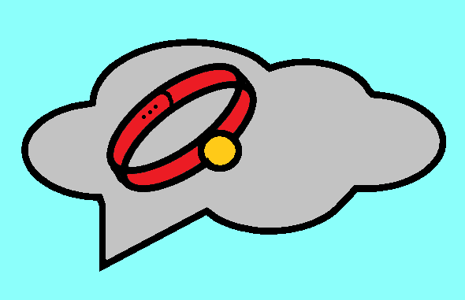
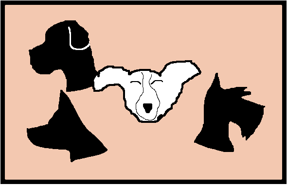
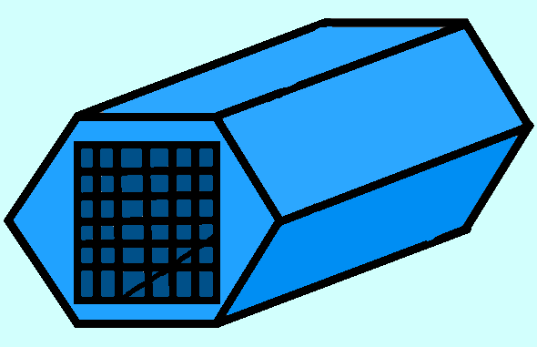
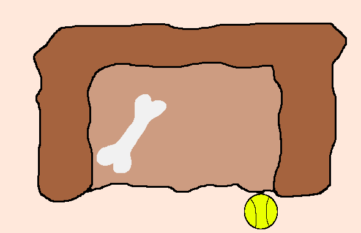

First Thoughts


Overview
From the kennel to the first trot
Welcome to the first trot section. For all pet owners the most important step in their journey begins before they adopt. Here we'll discuss things to think about before and during the dog welcoming process. Including but not limited to:
- Diffrent breeds and their attributes to look out for.
- Welcoming a new dog and integrating them.
- Understanding the behaviors of a new dog.
To reveal more information click on the pictures to the left.
Thinking about getting a Dog?
So you've finally put your paws on the trigger... you want a fury friend for you or your family. Before the fun there are a few things we'll need to get ready first. First know your breed, if you're looking for a specific breed or not every dog is different. While they all start out as cute puppies a Lasa apso will grow and behave differently than a lab. More factors include temperament, activity levels, sheading and grooming, and even allergies.
With a breed secured and researched basic supplies will need to be bought this includes bowels (automatic or Manuel) for food. A bed for napping and some toys for playing, although most dogs will probably be a little shy on the first day. Identification tags and flea collars are a must as well as a initial vet appointment. Lastly understand that a dog is more than just a pet its a part of the family and considerations for potential emergencies, insurance, and grooming if you don't do it yourself should be planned for.
Which dog is right for you
People come in all shapes and sizes, each b reed has traits that could complement or shake up one's life. Some well known are:
- Golden Retriever: The ultimate family dog retrievers are very trustworthy and patient making them excellent for children. Socially their great around other people and dogs with their gentle temperament. Golden Retrievers grow to be medium or large and they're trademark think golden coat sheds moderately through the year but goes through heavy sheading in the spring and fall.
- German Shepard: Shepherds are often among the top for their adaptability and deep devotion to their family. They grow up to be big and strong, built for endurance so they'll need constant activity. They're coat is thick and dense and requires frequent grooming to manage sheading.
- Lhasa Apso: These dog are described at confident being a breed originally from Tibet. Very small usually weighing no more than 20 pounds and being no more than a foot tall. Their coat is very thick and while sheading may not be a problem grooming will ne necessary monthly to avoid knots.
The ride home
On the ride home you may have some thoughts, here's what you need to know.
Settling in
You secured the package and made it home, for you its the start of a new relationship, for them its a whole new world. When brought to your home they will usually be afraid but curious, be sure to be patient with them and allow then to safely explore. Slowey start to establish a routine for the new dog to adjust to like early morning walking and food schedules, limit new visitors and loud events. The adjustment process usually sits between three weeks to three months with a overcoming shyness period, they may reveal their true playful self. Once that's down they'll begin to adjust to the daily routines when breakfast is and where to use the bathroom. After around three months the shyness will be almost gone, they'll act like a part of the family.
First Thoughts

